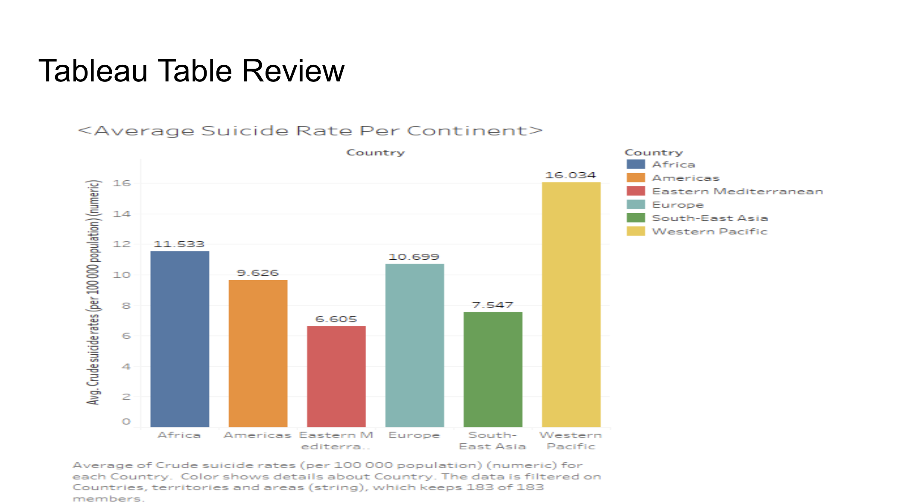

Stephen D. Smith's Portfolio
Mercer University: Masters of Science in Business Analytics
Business Analytic Projects:
The Four Factors of Basketball method: A statistical analysis of 8 past NBA championship teams
This project involved a deep dive into the performance metrics of NBA championship teams to identify key patterns that contribute to success. Using statistical analysis, I analyzed factors such as team efficiency, player performance, and other key metrics over the past eight championship teams. The goal was to uncover the four most impactful factors that correlated with winning the NBA championship. This project helped me refine my data collection, statistical analysis, and presentation skills.
Project Presentation
NBA Profitability Analysis Project
In this project, I analyzed the profitability of NBA teams, considering revenue sources such as ticket sales, broadcasting rights, sponsorships, and merchandise. I explored how these factors influence a team’s financial success and overall profitability. By using financial and performance data, I created a comprehensive report detailing which factors were most responsible for generating revenue and maintaining profitability in the NBA. This project enhanced my ability to perform financial analysis and use business intelligence tools like Tableau and Excel for deeper insights.
Project Presentation
Analyzing Global Suicide Rates Using R and Tableau
This project focused on the global issue of suicide rates, using data visualization tools to highlight patterns and trends across different countries and regions. By employing R and Tableau, I conducted a thorough analysis of factors that correlate with suicide rates, such as economic status, healthcare access, and mental health awareness. The findings aimed to contribute to the ongoing discussion about global mental health and inform strategies to reduce suicide rates. This project was instrumental in sharpening my skills in data analysis, statistical modeling, and data visualization.

Project Presentation
Management Analytics
This project involved applying analytical tools and methodologies to the realm of management, focusing on how data-driven decisions can improve business performance. I conducted a comprehensive analysis of business operations and created a report with recommendations for improving efficiency and profitability. This project allowed me to explore the intersection of data analytics and business management, emphasizing strategic decision-making.
Project Article
Excel Data
Report
Capstone - Chronic Depression in the Workforce: Causes, Data Insights & Business Solutions
For my capstone project, I investigated the causes of chronic depression in the workforce, examining how it affects productivity, employee well-being, and business outcomes. Using data analysis, I identified patterns and created actionable recommendations for businesses to better support employees dealing with mental health issues. This project strengthened my abilities in research, data-driven decision-making, and presenting complex findings in a business context.
Project Presentation
Report
Skills